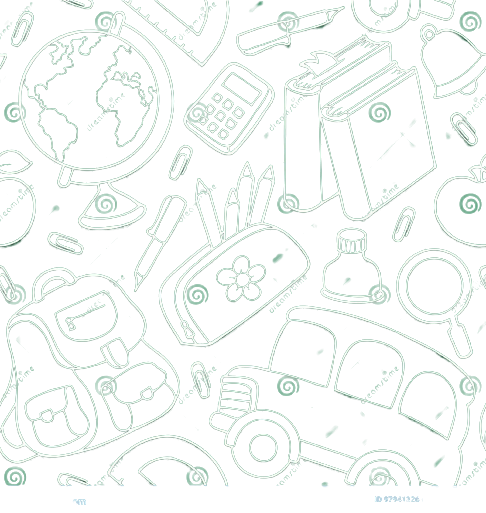

Keep LearingOn Track
Lifelong learning is a familiar phrase.
It is defined as “the ongoing,
voluntary and self-motivated pursuit
of knowledge either for personal
or professional reasons.
↗
Transforming School
and substitute
teacher

An Easier Way to be
Sub and Find Sub
Lifelong learning is a familiar phrase.
It is defined as “the ongoing,
voluntary and self-motivated pursuit
of knowledge either for personal
voluntary and self-motivated pursuit
or professional reasons.It is defined as “the ongoing
Teacher absences
disrupt student
learning
When school and districts have
reliable access to teacher
↗
A better way to
connect subs and
schools
When school and districts have
reliable access to teacher

↗
Student learing
stays on track to
meet target
When school and districts have
reliable access to teacher
↗